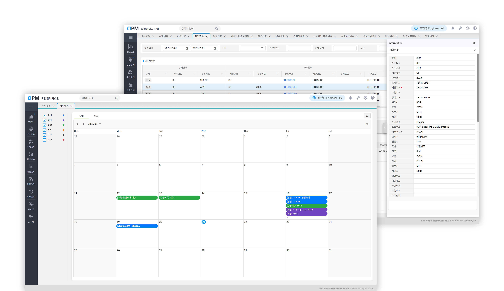
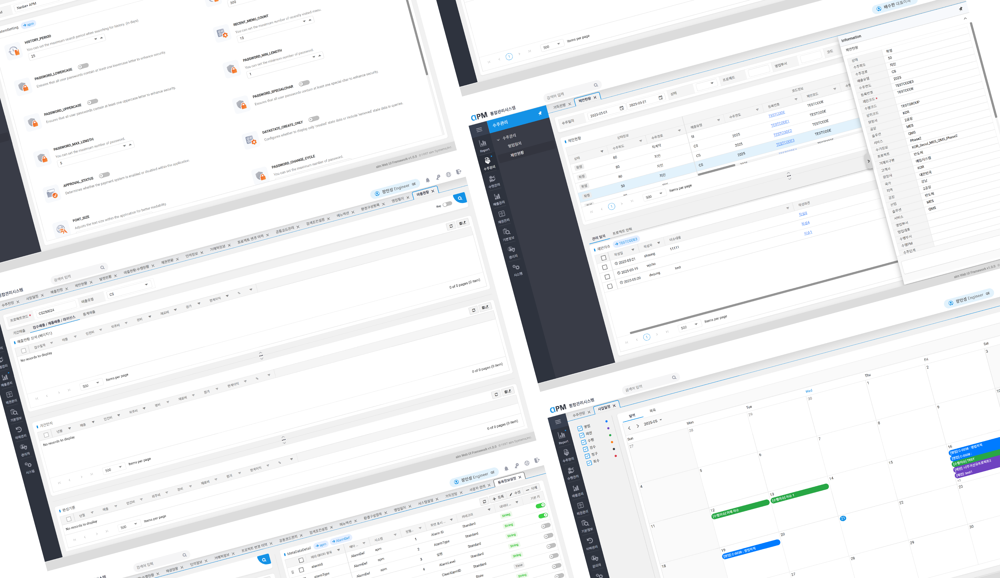

APM(Aimsystem Project Management)
자사 사업관리시스템 퍼블리싱

Project Overview
자사 사업관리 시스템(APM)을 대상으로, 인력·영업·수주 현황을 한 화면에서 파악할 수 있도록 정보 구조 재설계와 시각화 중심 퍼블리싱을 진행했습니다. 대시보드/리포트 화면의 흐름을 재정의하고, 표·차트 기반 데이터를 가독성 높은 컴포넌트로 구성해 실사용 시나리오(조회·필터·드릴다운)에 맞춰 적용했습니다.
Role & Scope
- Lead Designer & Publisher (90%)
- IA/레이아웃 재설계, 대시보드 와이어 & 하이파이 시안
- 표·차트 시각화 룩앤필 및 상호작용 규칙 정의
- 문서화/핸드오프(필터 규칙, 상태/빈화면/에러 표기)

Approach — Information Visualization & Workflow
- 핵심 KPI 묶음화: 인력·영업·수주 지표를 상단 카드/차트로 집약하고, 세부 표는 하단으로 분리
- 조회 흐름 표준화: Syncfusion 기반 표/차트 컴포넌트 스타일 커스터마이징
- 테이블 사용성: 조건별 필터, 조회 항목, 반응형 대응 등 주요 UI 흐름 일부 설계 및 구현
- 시각화 일관성: Vue 기반으로 UI를 재구성하고, Syncfusion 컴포넌트를 활용해 API 연동 및 그리드 기능 구현에 참여
- 컴포넌트 커스터마이징: Syncfusion Grid/Chart 기본 스타일 오버라이드로 제품 룩앤필 통일

Deliverables
- IA & 페이지 플로우 맵, 대시보드/리포트 와이어 & 시안
- SCSS 구조/토큰(타이포·간격·색상)과 공통 컴포넌트 가이드
- 테이블/필터/차트 상호작용 스펙(정렬/고정/빈 상태/에러)
- 핸드오프 문서(네이밍 규칙, 반응형 규칙, 변경 절차)
Outcome / Impact
- KPI와 표의 계층을 정리해 탐색 시간 단축 및 가독성 향상
- 공통 컴포넌트/토큰화로 스타일 중복 감소 및 유지보수 용이
- 테이블/필터/차트 상호작용 스펙(정렬/고정/빈 상태/에러)
- 조회–상세 사용 흐름 명확화로 사용자 오류/재작업 감소